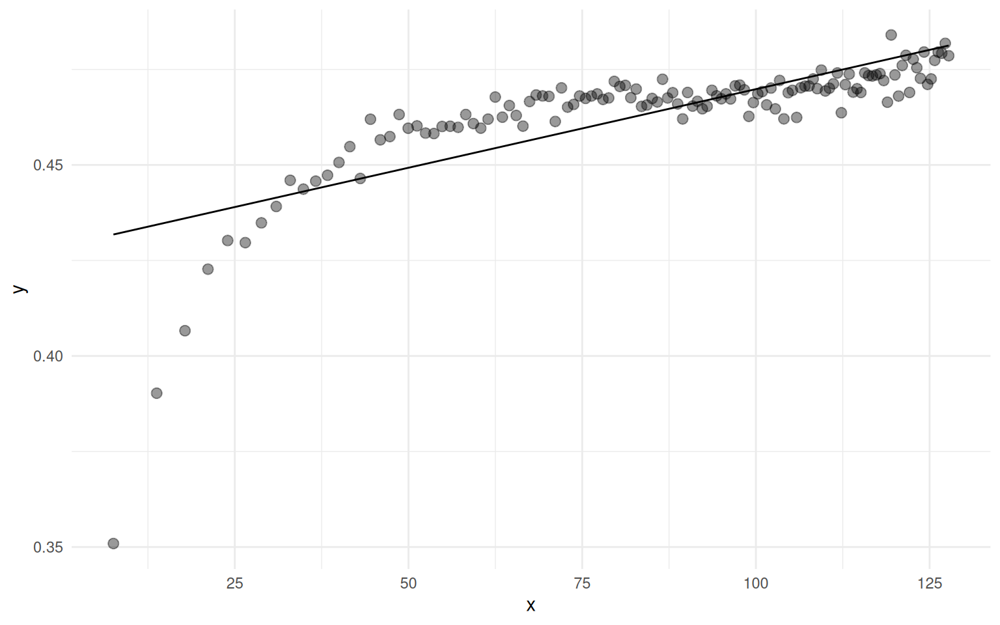

An Algorithmic Approach to Variograms
Variograms, an algorithm to analyze spatial interdependence of measurement locations, implemented step by step in R.
Introduction
Everything is related to everything else, but near things are more related than distant things.
(First Law according to Waldo Tobler)
This remarkably unquantitative statement, or “law”, is described on wikipedia as “a direct product of the quantitative revolution” in Geography. Contrast it with the wikipedia article on variograms, which is full of jargon and seemingly complicated equations.
With this tutorial, I would like to document the condensed essence of my own trials and misunderstandings with practical variogram-based analysis. We will see below that variograms are not that complicated after all.
The latter wikipedia article is a reminder that wikipedia generally is a non-academic, low quality resource. For example:
- They initially describe a (semi-)variogram as “a [mathematical] function”.
- That “function” describes the “degree of dependence” of a spatial random field (pro tip: if it is dependent, it is not random, such as the distribution of gold ore used as an introductory example is not random).
- As becomes unclear afterwards, that function is not “variance” (
var()), but something else. Although the whole thing is called variogram, variance is in fact the “degree of dependence”. - Then, they distinguish an empirical variogram (here). I would refer to the popular philosopher Vladimir Ilyich Ulyanov on this: “Praxis is the criterion of truth”1, i.e. there exists no useful non-empirical variogram.
- Finally, “variogram models” are mentioned, which are actually the function we began with. They are not just one function: there are many options, with the unmentioned Matérn being the generalization for a Gaussian- to Exponential class of functions.
My personal definition of the term variogram would rather describe it as a moderately flexible algorithm.
This notion is based on the actual implementation and application of the technique in various computer software libraries (R: gstat::variogram, geoR::variog, fields::vgram; Python: skgstat.Variogram), as well as primary references given below.
The common steps of performing variogram-based data analysis are:
- parameter choice, find or define the measure one would like to compare between locations within a well-organized data set
- cross-calculate distance and difference of measurement locations
- binning by distance (and optionally direction), thereby calculating semivariance or any other aggregated measure of difference per bin
- modeling, i.e. performing a regression (Matérn, Gauss, …) on the difference-distance data
- kriging (optional) is the application of the model for spatial interpolation (not shown)
I will implement these steps below, and interested readers are invited to confirm for themselves that the outcome matches the abundant variogram implementations in the mentioned libraries. The focus of this notebook is the code, interspersed with rather brief hints and explanations. The reason I present this is, first of all, educational (take-home ideas summarized in the blue boxes). Beyond that, I experienced some frustration with reproducibility of some of the variograms common libraries would give me: they simply do not document all the steps involved. Most of the intermediate steps are trivial by themselves, and giving the combined procedure the fancy name “variogram” seems like “hiding traces” to me. Mastering the building blocks can empower you to get creative with them. As a bonus, and to my surprise, the cross-calculation of distance and difference seems to be computationally more efficient if implemented as below (Section 2.4), which enables the calculation of variograms for far bigger data sets. But your mileage may vary, so feel invited to try it yourself.
Enjoy!
void <- suppressPackageStartupMessages
# our beloved tidyverse components:
library("dplyr") |> void()
library("ggplot2") |> void()
library("ggridges") |> void() # density ridges
library("parallel") |> void() # parallel processing, for bootstrapping
set.seed(123)
Data
We will work on a simulated data set of more or less random values, in which we know a priori what is going on.
Simulation Settings
Some general settings that define our synthetic data set:
n_observations <- 2^13 # sample size
extent <- 128 # width of the playing field
smooth_sigma <- 16 # smoothing range for creating spatial inter-dependence via Gaussian convolution ("smoothing")
zrange <- 2*pi # range of parameter values
# covariate effect magnitudes
a_slope <- pi/3
b_slope <- pi/4
Raw Random
Generating a data set of random points for playing around.
gimme_points <- function(N = 100, scale = 1.0) (runif(N)*2.0-1.0) * scale
data <- data.frame(
x = gimme_points(n_observations, extent),
y = gimme_points(n_observations, extent),
z_ = gimme_points(n_observations, zrange)
)
knitr::kable(head(data, 5))
| x | y | z_ |
|---|---|---|
| -54.38 | -116.23 | -0.5146 |
| 73.81 | -34.33 | 1.6651 |
| -23.30 | -53.96 | 2.6631 |
| 98.05 | -40.49 | -0.9586 |
| 112.76 | -51.11 | -5.5283 |
The raw data z_ is calculated as random numbers from a uniform distribution (with a given sample size and data range).
Mental note: points towards the rim will tend to have fewer neighbors. Or, in general, mind your spatial layout! (Sparse/dense? Clustered/homogeneous? …)
Common Covariate Classes
I also want to throw in two covariates, say… a and b.
Those stand in for real covariates.
One of them will systematically and continuously vary with the location (think of a North-South temperature gradient, or gradual humidity based on surface water distance).
The other is completely random, and categorical (e.g. micro-habitat subclasses, like in patches of vegetation on an agricultural landscape).
data$a <- 0.7 * data$x / extent + 0.3 * data$y / extent
As you see, a is continuous, but correlated to x and y.
In contrast, b is a categorical and randomly distributed:
data$b <- as.integer(rbinom(n = n_observations, size = 1, prob = 0.4))
data$z <- data$z_ + a_slope * data$a + b_slope * data$b
knitr::kable(head(data, 3))
| x | y | z_ | a | b | z |
|---|---|---|---|---|---|
| -54.38 | -116.23 | -0.5146 | -0.5698 | 0 | -1.111 |
| 73.81 | -34.33 | 1.6651 | 0.3232 | 1 | 2.789 |
| -23.30 | -53.96 | 2.6631 | -0.2539 | 0 | 2.397 |
There is no noise applied to those covariates a and b, moderate noise on the raw data z, so the two additional effects should be recover-able by a statistical model.
Visualizing, with color:
# https://stackoverflow.com/a/9946970
rbpal <- colorRampPalette(c('black','gold'))
color <- rbpal(n_observations)[as.numeric(cut(data$z, breaks = n_observations))]
plot(data$x, data$y, col = color, pch = as.integer(18 + 2*data$b),
xlab = "x", ylab = "y")
If you look closely, the upper right is more golden than the lower left.
This is the effect of covariate a.
Symbols indicate the categorical covariate b.
All rather random.
This artificial dataset is a placeholder for any real data you or someone else might have collected.
All these data sets have in common that there are spatial coordinates involved (here x and y without loss of generality; you can trivially add a third spatial dimension).
I mostly skip step 1 (parameter choice) from the list above, because it is a rather individual undertaking.
Ensure that your data is accurate, exploratory data analysis, evaluation and feedback with meetings and stakeholders - these sorts of things.
The parameter of interest does not have to be a raw measurement, but can be the end of a long data analysis and modeling pipeline (more on this in Section 3.1).
Cross-Difference
The following one-line functions are a major game-changer for large data sets, in particular the self_difference().
Their purpose is to compute the difference of all elements of one vector to each other, in matrix form.
The outer vector product is well-implemented in R, most efficient, which allows this to be applied to long vectors.
There are many applications beyond the one shown here.
Try to read and understand them one by one, and go beyond the limited R documentation.
With self_difference, we can define a simple function to calculate the Euclidean cross-distance of points within a data set.
We can even make the distance wrap at the edges, simply using the modulo in wrap_difference, but that is specific to our artificial test case and probably has little relevance in real life.
The modified Euclid_wrap effectively gives us an infinite playing field.
Those functions return matrices, with all the vector indices in rows and columns.
Usually, we only require unique cross-combinations of elements in arbitrary order, which can be achieved by lower_triangling the matrix (grabbing the lower triangle of a matrix with lower.tri).
# compute the difference of all elements of one vector to each other
self_difference <- function(vec) outer(X = vec, Y = vec, FUN = function(X, Y) Y - X )
wrap_difference <- function(vec) outer(X = vec, Y = vec, FUN = function(X, Y) (Y - X) %% (2*extent))
# Calculate the Euclidean distance of the x and y columns in a data frame.
Euclid <- function(data) sqrt(self_difference(data$x)^2 + self_difference(data$y)^2 )
Euclid_wrap <- function(data) sqrt(wrap_difference(data$x)^2 + wrap_difference(data$y)^2 )
# return the lower triangle of a matrix, unpacking it into a vector of unique values
lower_triangle <- function(mat) mat[lower.tri(mat)]
This was just an opportunistic excourse to step 2 cross calculation from the roadmap. In fact, we are not yet finished preparing our test data set (for which these functions are useful).
Simple Smoothing
Just so that we can optionally incorporate some Tobler spirit: a smoother. 2D smoothing, or “convolution with a 2D Gaussian”, as the pro’s call it, is what creates relation among adjacent points.
# smoothing 2D data
smooth <- function(data, sigma = NULL) {
if (sigma <= 0 || is.null(sigma) || is.na(sigma)) {
return(data$z)
}
dist <- Euclid_wrap(data)
# sigma <- extent / 3
weight <- dnorm(dist, 0, sigma)
weight <- weight / colSums(weight)
# do.call("cbind", rep(list(data$z), length(data$z)))
zmoothed <- weight %*% data$z
return(zmoothed[, 1])
}
Smoothing just smoothes all the points, irrespective of groups in the categorical b.
To get something out of the parameter we implemented, better smooth group-wise.
groupwise_smoothing <- function(grp) {
sub_data <- data %>%
filter(b == grp)
sub_data$s <- smooth(sub_data, smooth_sigma)
return(sub_data)
}
# "split-apply-combine" strategy
data <- bind_rows(lapply(sort(unique(data$b)),
FUN = groupwise_smoothing
))
color <- rbpal(n_observations)[as.numeric(cut(data$s, breaks = n_observations))]
plot(data$x, data$y, col = color, pch = 20,
xlab = "x", ylab = "y")

Nice and smooth.
Feel free to draw a sunset by adjusting a and removing the groups.
Note that I chose s here as a variable name for the smoothed z, which should not be confused with the \(s\) often used elsewhere to describe the position vector of locations.
Variograms
Debatable “De-Trending”
For good reasons, which I hope to make clear below, variogram functions such as gstat::variogram() provide the option of de-trending the data.
This is demonstrated in the examples documented with the function; one available parameter (trend.beta) provides the option of incorporating pre-calculated spatial regressions.
In our example, one could use
data_sf <- sf::st_as_sf(data, coords = c("x", "y"), crs = 31370, remove = FALSE)
v <- gstat::variogram(z ~ x + y, data = data_sf)
v.fit <- gstat::fit.variogram(v, gstat::vgm("Mat"))
v.fit
De-trending just refers to working on the residuals after spatial linear regression. It is an optional preprocessing step in the context of step 1/parameter choice, which can improve the data in a sense that the derived values better match assumptions which are favorable for the following variogram analysis steps.
More details on variogram fitting are available online, for example on r-spatial.
In preparation of this tutorial, I initially confused setting sp::coordinates with the gstat::variogram formula z ~ x + y, and thought that de-trending is mandatory.
This is not the case: you can use a z ~ 1 variogram.
However, the present synthetic data benefits from de-trending (Section 6.1).
In my opinion, “de-trending” is not an accurate statistical term. What is a trend, where does it start, where does it end?
What they really mean is that the analysis is continued on the residual of a linear regression on all spatial co-ordinates.
In R, we can simply use lm().
The regression formula contains the outcome variable on the left handside, and all spatial variables (x, y, sometimes z) on the right.
data$d <- lm(s ~ x + y, data)$residual # "d" as in "de-trending"
# another sunrise...
color <- rbpal(n_observations)[as.numeric(cut(data$d, breaks = n_observations))]
plot(data$x, data$y, col = color, pch = 20,
xlab = "x", ylab = "y")

Whether or not to de-trend prior to variogram calculation is a crucial design decision.
De-trending often improves variogram model regression (Section 6.1), but it also removes/diminishes the effects of spatially correlated co-variates such as our parameter a.
Make sure that you know whether your variogram function applies de-trending, or not.
At any rate, I would recommend to store the detrended linear effects for later by applying your own lm(), prior to variogram fitting.
Beautiful Binning
By now, we have prepared several variants of our simulated outcome variables (z -> s -> d), which is more than enough to demonstrate step 1.
The next obvious step is to cross-calculate distances and differences, and that is quickly done with the base-R machinery.
It is good to keep track of the difference-distance plot.
The functions self_difference and Euclid_wrap are defined above (Section 2.4).
# compute raw distance and difference
dist_diff <- data.frame(
distance = lower_triangle(Euclid_wrap(data)),
difference_raw = lower_triangle(self_difference(data$z)),
difference_smooth = lower_triangle(self_difference(data$s)),
difference = lower_triangle(self_difference(data$d))
)
# limit range, which is a major performance saver.
dist_diff <- dist_diff %>%
filter(distance > 0, distance < extent)
# binning, using `cut`
dist_diff$bin1 <- as.factor(
cut(
dist_diff$distance,
breaks = seq(
0, extent,
length.out = as.integer(extent/4+1)
)
))
I would recommend to always look at a raw plot of the difference against distance, before proceeding with any other variogram steps.
dist_diff %>%
ggplot(aes(x = abs(difference), y = bin1)) +
geom_density_ridges(rel_min_height = 0.05,
quantile_lines = TRUE, quantiles = 4,
scale = 2.0, bandwidth = 0.05) +
labs(x = "mean absolute difference", y = "distance bin") +
xlim(0, 2) +
theme_bw() + coord_flip() +
theme(axis.text.x = element_text(angle = 90, vjust = 0.5, hjust=1))
Warning: Removed 265464 rows containing non-finite outside the scale range
(`stat_density_ridges()`).
This brings us fluently to step 3: binning by distance. Again, a number of choices await.
On real data, it can be beneficial to cut equal-sized bins.
This can be done with the convenient R function ggplot2::cut_number.
dist_diff$bin <- as.factor(
cut_number(
dist_diff$distance,
n = as.integer(extent)
))
Note the difference of equal-sized (i.e. all bins house the same number of observations) to the more conventional, but maybe less natural equal-width (i.e. all bins span the same value range):
b1 <- dist_diff %>%
summarize("ds" = mean(distance), "n" = n(), .by = bin1)
b2 <- dist_diff %>%
summarize("ds" = mean(distance), "n" = n(), .by = bin)
ggplot(NULL) +
geom_step(aes(x = b1$ds, y = b1$n), color = "darkblue") +
geom_step(aes(x = b2$ds, y = b2$n), color = "turquoise") +
geom_hline(yintercept = 0, color = "darkgrey") +
labs(x = "distance (bin average)", y = "samples per bin") +
theme_bw()
On synthetic data, the expected difference in variogram outcome between the two binning methods is negligible. On real data, it can make a difference:
- A good minimum number of observations per bin should be achieved. Think in the order of a hundred, if your data allows it.
- Fixed distance bin sample size does not generally ramp up as in the synthetic data.
- Bin sample size matters for some difference measures; bins with particularly small or large filling will occur as outliers, especially when calculating semivariance.
- Different sub-categories within the data might be binned separately (e.g. categorical parameter
b).
Note that bin spacing and size are crucial for variogram calculation. A substantial minimum number of observations per bin is relevant. This can be output-driven: do bins align in the form you would like to model, or do they spread a lot with inter-bin noise?
This is not restricted to equally-spaced bins: try log-spacing or equal-size bins!
It might make sense to incorporate categorical variables into the binning.
“Difference” in Distance-Difference Diagrams
With binning comes the immediate question also part of step 3: what do we actually quantify as “difference”?
Conventionally, variance (VAR) is the mean squared difference of observed values (or a subset of observations, e.g. in a group or bin) from their mean.
It is implemented in R with the var function (note that R implements the “sample variance”, i.e. the formula normalizing by n - 1 for Bessel’s correction).
However, applying this formula for variograms is wrong unconventional!
In variograms, the mean is replaced by a given point on the landscape (we want to look at differences from that focus point), and then we iterate over adjacent points. Conventional variance and geospatial semivariance are related in what is called the “stationary case”; in fact, stationarity is a critical assumption for the following spatial data analyses (see here): we assume that
the mean is constant between samples and is independent of location
Please try to find out yourself what this means (a great starting point might be this extensive comparison of variance equations). Personally, I find “constant between samples” a bit fishy: is it “constant between/among two samples” (ridiculous: is it then the mean of those two samples?), or “constant across all samples” (i.e. just “constant everywhere”)? If something is “independent of location”, why bother computing a spatial interpolation? The answer lies somewhere between (among?) the very exact maths hidden in the literature.
And, anyways, if the assumption holds, we get a neat formula for semivariance (“Method-of-Moments Estimator” according to Cressie, 1993, p. 69, eqn. 2.4.2), which goes back to Matheron (1962).
We define the semivariance \(\gamma\):
\(\gamma = \frac{1}{2N} \sum\limits_{N} \left(z_j - z_i\right)^2\)
Herein, \(N\) is the number of observation pairs \({i, j}\); those are usually grouped (binned) so to quantify variances at different distances \(\gamma\left(h\right)\) (with \(h\) the “lag vector magnitude”, i.e. distance group).
Semivariance \(\gamma\) should better be remembered as half mean square difference (HMSD).
There is at least one more option worth attempting: instead of the square-form semivariance above, just calculate mean absolute difference (MAD) as follows.
\[ \langle dw\rangle = \frac{1}{N} \sum\limits_{i,j} \left| z_j - z_i\right| \]
We will calculate all three parameters for demonstration: variance, semivariance, and mean absolute difference.
calculate_semivariance <- function(diff_vector) 1/(2*length(diff_vector)) * sum(diff_vector^2) # "HMSD"
dist_diff_binned <- dist_diff %>%
select(-bin1) %>%
group_by(bin) %>%
summarize(across(everything(), list(
"mean" = mean,
"absmean" = function(measurements) sum(abs(measurements)) / length(measurements),
"variance" = var,
"semivariance" = calculate_semivariance,
"count" = function(measurements) length(measurements)
)
)) %>%
select(bin, distance_mean, distance_count,
difference_variance, difference_semivariance, difference_absmean
) %>%
rename(c(
"variance" = difference_variance,
"semivariance" = difference_semivariance,
"mean_abs_difference" = difference_absmean
))
# semivariance is NOT simply half the variance
dist_diff_binned$half_variance <- 0.5 * dist_diff_binned$variance
knitr::kable(head(dist_diff_binned), digits = 2)
| bin | distance_mean | distance_count | variance | semivariance | mean_abs_difference | half_variance |
|---|---|---|---|---|---|---|
| [0.03019,11.29] | 7.53 | 51475 | 0.56 | 0.35 | 0.62 | 0.28 |
| (11.29,15.97] | 13.76 | 51475 | 0.64 | 0.39 | 0.67 | 0.32 |
| (15.97,19.59] | 17.83 | 51475 | 0.67 | 0.41 | 0.70 | 0.34 |
| (19.59,22.63] | 21.14 | 51474 | 0.71 | 0.42 | 0.71 | 0.35 |
| (22.63,25.28] | 23.98 | 51475 | 0.72 | 0.43 | 0.72 | 0.36 |
| (25.28,27.71] | 26.51 | 51475 | 0.72 | 0.43 | 0.73 | 0.36 |
As you see from the table, the three measures are slightly different; the difference can become more pronounced on non-synthetic data sets.
No matter whether you choose to use VAR, HSMD, MAD, or anything else, make sure your readers know what difference you are actually portraying.
Bonus tip: consider standardizing your data prior to calculating differences.
Eminent Empirics
One more step:
par(mfrow = c(1,2))
plot(dist_diff_binned$distance_mean, dist_diff_binned$mean_abs_difference,
type = "o", col = "darkblue",
xlab = "distance bin number",
ylab = "mean absolute difference"
)
plot(dist_diff_binned$distance_mean, dist_diff_binned$semivariance,
type = "o", col = "darkgreen",
xlab = "bin average distance",
ylab = "semivariance"
)
par(mfrow = c(1,1))
You might call these (Figure 6) the “empirical variogram”, if you like. They are effectively a variogram. Vari-o-gram. A plot of the bin-wise semivariance (or other difference measures) against distance.
Good to have. Now let’s get started.
Model Regression
Fitting Functions
You might consider all the above as really just preparation for step 4/modeling. However, (lack of) good preparation is the start and end of any modeling attempt. There are a lot of combinations and choices by now, and it is worth systematically permuting target parameters and difference measures.
Cognitive Dissonance Warning: because we binned the data above, we now need to fit a function through the bins to interpolate the space in between. Even more of a paradox is that we will not use that model here to predict any values; it just models semivariance, anyways.
There are some general convenience wrappers for classical regression in R, though I personally did not find a really convenient one because the sheer array of choices is rather intransparent.
However, base-r optim does all we need (sometimes).
There are other libraries.
We choose between well-known “Nelder-Mead” optimization algorithm (Nelder & Mead, 1965), or the more versatile “L-BFGS-B” (Byrd et al., 1995; Zhu et al., 1997). They are interchangeable to some degree, yet the latter allows to define logical parameter boundaries to facilitate optimization convergence.
# wrap a regression function to generate residuals
# the result is the parameter to be minimized.
wrap_target_function <- function(x, y, regressor, parameters) {
predictions <- regressor(x, parameters)
differences <- y - predictions
# optimization superstition: scaling rmse to better read decimals
differences <- differences * 1000
return(sqrt(mean(differences^2)))
}
# yet another trick: we can improve model fit on the closer points,
# by giving them more weight
wrap_target_function_distanceweighted <- function(x, y, regressor, parameters) {
predictions <- regressor(x, parameters)
differences <- y - predictions
# gently improving performance on proximal points:
differences <- 1000 * differences * 1/sqrt(x)
rmsd <- sqrt(mean(differences^2))
return(rmsd)
}
# this can turn regression output into a usable function.
# εὕρηκα, functional programming!
create_prediction_function<- function(regressor, results) {
fcn <- function(x) {
regressor(x, results$par)
}
return(fcn)
}
# a uniform way to print results
print_regression_results <- function(orsl, label = "") {
par <- paste(round(orsl$par, 4), collapse = ", ")
conv <- orsl$convergence
eps <- orsl$value
print(sprintf("%s regression: convergence %i at (%s), mse %.1f", label, conv, par, eps))
}
# note: the `epsilon` can be calculated manually with the formula:
# sum((predictor_function(x) - y)^2)
# Finally, a quick histogram plot of residuals.
plot_residuals_histogram <- function(x, y, predictor_function, ...) {
residuals <- predictor_function(x) - y
ggplot(NULL, aes(x = residuals)) +
geom_histogram(...) +
theme_bw()
}
To test this, behold the non-sensical linear regression!
x <- dist_diff_binned$distance_mean
y <- dist_diff_binned$semivariance
linear_function <- function(x, parameters) {
return(parameters[1] + parameters[2]*x)
}
optimizer_results <- optim(
par = c(0, 0.05),
fn = function(parameters) {
wrap_target_function(x, y, linear_function, parameters)
}, method = "Nelder-Mead"
)
print_regression_results(optimizer_results, label = "linear")
[1] "linear regression: convergence 0 at (0.4287, 0.0004), mse 10.7"
predictor_function <- create_prediction_function(linear_function, optimizer_results)
ggplot(NULL, aes(x = x, y = y)) +
geom_point(size = 2.5, colour = "black", fill = "white", alpha = 0.4) +
geom_line(aes(x = x, y = predictor_function(x))) +
theme_minimal()

Observations:
- The regression fits the data more or less well, quantified by the mean square error (
mse). - Optimizer did converge (
convergence 0, see “convergence” here), which should not be overrated (the regression might still be irrelevant). - Parameters can be measured, in this case intercept (\(0.43\)) and slope (\(0.0004\)).
We can do better, of course.
Beloved Bellcurve
Quite a popular choice is the Gaussian. There is a suitable “parametric extension” on wikipedia. It can be slightly simplified, and the terminology adjusted to Variogram slang.
gauss_function <- function(x, parameters) {
scale <- parameters[1] # height
mu <- 0 # mean, always zero here
sigma <- parameters[2] # standard deviation
nugget <- parameters[3] # height at the zero intercept
# This parametrization ensures that "nugget < sill" if "scale > 0"
sill <- scale + nugget
# the raw, unscaled gaussian kernel
gauss <- exp(-((x - mu)^2) / (2 * sigma^2))
# the bell should point downwards:
result <- sill - scale * gauss
return(result)
}
try_x <- seq(-pi, pi, length.out = 100)
try_y <- gauss_function(try_x, parameters = c(1.5, 1., 0.5))
plot(try_x, try_y, type = "l", xlab = "x", ylab = "y", ylim = c(0, 2.))
abline(v = 0)
I still have a hard time to associate anything maths-related to the words nugget and sill: they could equally well be some ancient greek letters spelled out in a non-greek way, such as σίγμα.
Historically, they stem from what I think were the earliest applications of variogram-like analysis, as my colleague Hans Van Calster confirmed me when reviewing this tutorial:
> nugget comes from “gold” nugget in mining. In sampling gold, the chances of finding a nugget of gold from adjacent locations may differ a lot - hence they have a large “nugget” effect (large differences at very small distances).
We have to accept that they are frequently encountered in the variogram literature.
- The
nuggetis the value our function takes at the zero intercept, i.e. baseline variance, i.e. the lowest difference we can get (often defined by measurement uncertainty). - Conversely, the
sillis the maximum variance we expect to be reached when comparing measurements at totally unrelated locations. The stereotypical Gaussian variogram will asymptotically approach this value towards infinite distance. - The
sigmaparameter characterizes the width of the curve; it will indicate the range at which measurements still resemble each other to a certain degree.
These parameters will become clearer below when we actually adjust our model to fit the data (i.e. regression).
Virtuous Variograms
This can be put to action as follows.
x <- dist_diff_binned$distance_mean
y <- dist_diff_binned$semivariance # multiplied to support optimizer
start_values <- c(zrange, smooth_sigma, 0.)
optimizer_results <- optim(
par = start_values,
lower = c(0.0, 0.0, 0.0), # all positive parameters
upper = c(2 * zrange, extent / 4, zrange), # prevent crazy outcomes
fn = function(parameters) {
wrap_target_function_distanceweighted(x, y, gauss_function, parameters)
},
control = list("fnscale" = 1e-8),
method = "L-BFGS-B"
)
predictor_function <- create_prediction_function(
gauss_function,
optimizer_results
)
print_regression_results(optimizer_results, label = "Gauss")
[1] "Gauss regression: convergence 0 at (0.1202, 16.7599, 0.3464), mse 0.8"
The lower bounds are enabled by our parametrization; the control parameter fnscale seems to improve regression accuracy on low-magnitude y-values; start values are using our prior knowledge (this is a tutorial, after all, so the regression better work).
Inspecting the residual pattern:
plot_residuals_histogram(x, y, predictor_function,
bins = 32, fill = "lightgray", color = "black")
The regression results for scale, range, and nugget are 0.12, 16.76, 0.35, respectively.
Conversion to our slightly more meaningful parameters:
scale <- optimizer_results$par[1]
range <- optimizer_results$par[2]
nugget <- optimizer_results$par[3]
sill <- nugget + scale
sigma here is related to the sigma we used for smoothing above; I chose to define the range as sigma (which is also not conventional).
The sigma | range I see here is the width of the Gaussian, which is related, but not equal to what others call range.
Finally, visualization. Behold: a variogram model.
predx <- seq(0, extent, length.out = 2*extent + 1)
ggplot(NULL, aes(x = x, y = y)) +
geom_vline(xintercept = range, color = "darkgrey") +
geom_hline(yintercept = nugget, color = "darkgrey") +
# geom_hline(yintercept = sill, color = "darkgrey") +
geom_point(size = 2.5, colour = "black", fill = "white", alpha = 0.4) +
geom_line(aes(x = predx, y = predictor_function(predx))) +
theme_minimal()
Whenever it works (which should not be taken for granted), the fit is quite good. Not perfect here, we can still do better.
There are certainly much better regression tools, including probabilistic ones which estimate parameter credible intervals. Please do not hold back to explore these.
Playground: Generalization
Gentle Generalization
Can we collect all the steps above in a handy function? Sure!
fit_variogram <- function(
x, y, value, fcn,
difference_parameter = c("semivariance", "var", "mad"),
skip_detrend = FALSE,
verbose = TRUE,
...) {
# the ellipsis ( , ...) will pass through optimizer parameters
# convenience structure to match the above
df <- data.frame(x = x, y = y, z = value)
# de-trending, optionally disabled
if (skip_detrend) {
df$d <- df$z
} else {
df$d <- lm(z ~ x + y, df)$residual
}
# distance-difference
dd <- data.frame(
dist = lower_triangle(Euclid_wrap(df)),
diff = lower_triangle(self_difference(df$d))
) %>%
filter(dist > 0, dist < extent)
# binning (could be improved!)
dd$bin <- as.factor(cut(dd$dist, breaks = as.integer(extent/2)))
dd_binned <- dd %>%
group_by(bin) %>%
summarize(across(everything(), list(
"mean" = mean,
"absmean" = function(vec) sum(abs(vec)) / length(vec),
"variance" = var,
"semivariance" = function(vec) 1 / (2 * length(vec)) * sum(vec^2),
"count" = function(vec) length(vec)
)
)) %>%
select(bin, dist_mean, dist_count,
diff_variance, diff_semivariance, diff_absmean
) %>%
rename(c(
"var" = diff_variance,
"semivariance" = diff_semivariance,
"mad" = diff_absmean
))
# regression
regx <- dd_binned$dist_mean
diffpar <- match.arg(difference_parameter, several.ok = FALSE)
regy <- 0.5 * dd_binned %>% pull(!!diffpar)
optimizer_results <- optim(
fn = function(parameters) {
wrap_target_function_distanceweighted(regx, regy, fcn, parameters)
},
...
)
if (verbose) print_regression_results(optimizer_results, label = "")
# store everything in one list;
# do I sense a smidgen of OOP here? No, not really.
optimizer_results$fcn <- fcn
optimizer_results$regx <- regx
optimizer_results$regy <- regy
optimizer_results$diffpar <- diffpar
return(optimizer_results)
}
Matérn Machinery
There is at least one step further from Gauss. Let’s mimic what the pro’s do!
What follows is an exact quote (source).
Note that the \(s\) here stants for a position vector, and not the smoothed z.
<quote>
The Matérn defines the covariance \(\Phi\left( s_j, s_k\right)\) between spatial locations \(s_j\) and \(s_k\) as
\[\Phi\left( s_j, s_k\right) = \tau^2 / \Gamma\left(\nu\right) 2^{\nu -1} \left(\kappa d_{jk}\right)^\nu K_\nu\left(\kappa d_{jk}\right)\]
where \(\tau^2\) controls the spatial variance, \(\nu\) controls the smoothness, \(\Gamma\) represents the Gamma function, \(d_{jk}\) represents the distance between locations \(s_j\) and \(s_k\), \(K_\nu\) represents the modified Bessel function of the second kind, and \(\kappa\) represents the decorrelation rate. The parameter \(\nu\) is set to \(1\) to take advantage of the Stochastic Partial Differential Equation (SPDE) approximation to the GRF to greatly increase computational efficiency (Lindgren et al., 2011). Internally, the parameters \(\kappa\) and \(\tau\) are converted to range and marginal standard deviation \(\sigma\) as \[range=\frac{8}{\kappa}\] and \[\sigma=\left(4\pi e^{2log(\tau )+2log(\kappa)}\right)^{-\frac{1}{2}}\]
</quote>
This is just to confuse you. I found the \(\tau\)/\(\kappa\)/\(\sigma\)-parametrization to be less intuitive and not fitting our geoscience jargon, but the Bessel and Gamma were appropriate; so here a slightly modified parametrization.
matern_function <- function(d, parameters) {
scale <- parameters[1] # related to semivariance
sigma <- parameters[2] # related to actual range; turning point
nugget <- parameters[3] # minimum difference (at the intercept)
nu <- parameters[4] # shape parameter
sill <- scale + nugget
z <- sqrt(2 * nu) * d / sigma
K <- suppressWarnings(besselK(z, nu))
matern <- (z)^nu * K / (2^(nu - 1) * gamma(nu))
result <- sill - scale * matern
result[is.na(result)] <- 0
return(result)
}
I initially had trouble fitting this function, because I simplified (leaving out nugget and nu); the version above is quite flexible to fit our variogram.
Note that the function is not defined at zero, which is why I filter NA.
The Matérn implementation does not allow decreasing or oscillating semivariance (sometimes seen in real data), but on the other hand decreasing semivariance would griefly violate Tobler’s observation.
Note that there are different definitions of the Matérn range and the parameter sigma.
Make sure you know which range your toolbox of choice is reporting.
Here and below, I will report the range that is determined by sigma in the above function definition.
That sigma (\(\sigma\)) is related to the turning point of the Matérn function.
Any regression function demands a specific plot function:
plot_matern <- function(optimizer_results) {
# retrieve everything
fcn <- optimizer_results$fcn
regx <- optimizer_results$regx
regy <- optimizer_results$regy
diffpar <- optimizer_results$diffpar
# wrap the function with the optimized parameters
predictor_function <- create_prediction_function(
fcn,
optimizer_results
)
# extract parameters
scale <- optimizer_results$par[1]
sigma <- optimizer_results$par[2]
range <- optimizer_results$par[2]
nugget <- optimizer_results$par[3]
sill <- scale + nugget
# plotting
plotx <- seq(0, extent, length.out = 2 * extent + 1)
plotx <- plotx[plotx > 0]
g <- ggplot(NULL, aes(x = regx, y = regy)) +
geom_vline(xintercept = range, color = "darkgrey") +
geom_hline(yintercept = nugget, color = "darkgrey") +
geom_hline(yintercept = sill, color = "darkgrey") +
geom_point(size = 2.5, colour = "black", fill = "white", alpha = 0.4) +
geom_line(aes(x = plotx, y = predictor_function(plotx))) +
labs(
title = "Matérn regression, with range indicated (vertical line)",
y = diffpar,
x = "distance"
) +
theme_minimal()
return(g)
}
In application:
vg_all <- fit_variogram(
x = data$x,
y = data$y,
value = data$s,
fcn = matern_function,
par = c(zrange, smooth_sigma, 0., 1.),
lower = c(0.0, 0.0, 0., 0.001),
upper = c(10, 100, 100, 100),
control = list("fnscale" = 1e-8),
method = "L-BFGS-B"
)
[1] " regression: convergence 0 at (0.0916, 16.7871, 0.143, 0.4806), mse 0.3"
plot_matern(vg_all) # + ylim(0, 0.25)

Note the sensible choice of starting values and boundaries. Again, I indicated the \(\sigma\) range.
See the considerable non-zero nugget? Let us explore where it comes from!
Prior Parametrization
To take variogram analysis further, we can filter the dataset to retrieve one of the two b categories.
Compare what happens to the range and nugget!
semi_data <- data %>%
filter(b == 0)
vg_b0 <- fit_variogram(
x = semi_data$x,
y = semi_data$y,
value = semi_data$s,
fcn = matern_function,
par = c(zrange, smooth_sigma, 0., 1.),
lower = c(0.0, 0.0, 0., 0.001),
upper = c(10, 100, 100, 100),
control = list("fnscale" = 1e-8),
method = "L-BFGS-B"
)
[1] " regression: convergence 0 at (0.1317, 17.4239, 0.0059, 0.6202), mse 0.4"
plot_matern(vg_b0)

semi_data <- data %>%
filter(b == 1)
vg_b1 <- fit_variogram(
x = semi_data$x,
y = semi_data$y,
value = semi_data$s,
fcn = matern_function,
par = c(zrange, smooth_sigma, 0., 1.),
lower = c(0.0, 0.0, 0., 0.001),
upper = c(10, 100, 100, 100),
control = list("fnscale" = 1e-8),
method = "L-BFGS-B"
)
[1] " regression: convergence 0 at (0.1859, 13.8511, 0.0159, 1.0527), mse 0.6"
plot_matern(vg_b1)
The \(\sigma\)-range of the full data set with two different categories mixed is \(16.8\). If we only include one of the categories, making the data points more similar, ranges are \(17.4\) and \(13.9\). Longer range would mean that distant points are more similar.
The variance itself is also determined by the magnitude of values:
on the b==1 subset, we added to the measured parameter.
Consequently, we see the scale = sill-nugget increase from \(0.13\) to \(0.19\).
If you noticed that especially the b==0 data does not entirely fit the model, you are right: because of the “wrapped smoothing, then detrending” simulation procedure, the margin prohibits perfect detrending.
Which brings me to a revision of these effects.
Recap: De-Trending and Smoothing
(How does semivariance change without de-trending and un-smoothed, and why?)
De-activated De-trending
Luckily, we computer-engineered in a skip_detrend flag above.
vg_nodetrend <- fit_variogram(
x = data$x,
y = data$y,
value = data$s,
fcn = matern_function,
skip_detrend = TRUE,
par = c(zrange, smooth_sigma, 0., 1.),
lower = c(0.0, 0.0, 0., 0.001),
upper = c(10, 100, 100, 100),
control = list("fnscale" = 1e-8),
method = "L-BFGS-B"
)
[1] " regression: convergence 0 at (0.2116, 56.3717, 0.1388, 0.3905), mse 0.4"
plot_matern(vg_nodetrend)

Due to the systematic effect in the “trended” data, the semivariance keeps rising with increasing distance,
which the Matérn model shows in a low nu and wide sigma.
Think about it as standing on a slope: if you look uphill, points tend to be higher, downhill, lower, otherwise points level.
The variance of all points in a fixed circle around you would be much higher, compared to a level field.
Even the inverse seems to be a general pattern:
Skip Smoothing
How about the raw-raw data?
vg_nosmoothing <- fit_variogram(
x = data$x,
y = data$y,
value = data$z,
fcn = matern_function,
skip_detrend = TRUE,
par = c(zrange, smooth_sigma, 0., 1.),
lower = c(0.0, 0.0, 0., 0.99),
upper = c(100, 100, 0.01, 1.01),
control = list("fnscale" = 1e-8),
method = "L-BFGS-B"
)
[1] " regression: convergence 0 at (6.7494, 0.4544, 0.01, 1.01), mse 10.5"
plot_matern(vg_nosmoothing)
As expected, with purely random data, Tobler’s law does not apply.
(The jitter on close points is due to lower sample size.)
As with Non-Newtonian fluids, these could be called “Non-Toblerian data”.
I had to fix the nu and nugget because the whole concept does not make sense for a constant.
If your semivariance returns a constant, your data was not spatially related.
Return to step 1.
Taking it Further
MAD Measurements
Conventionally, semivariance is used as a difference measure, yet there are alternatives (Section 3.2).
vg_mad <- fit_variogram(
x = data$x,
y = data$y,
value = data$s,
difference_parameter = "mad",
fcn = matern_function,
par = c(zrange, smooth_sigma, 0., 1.),
lower = c(0.0, 0.0, 0., 0.001),
upper = c(10, 100, 100, 100),
control = list("fnscale" = 1e-8),
method = "L-BFGS-B"
)
[1] " regression: convergence 0 at (0.1352, 13.3888, 0.2461, 0.4093), mse 0.5"
plot_matern(vg_mad)
Except for the range of y-values, the regression seems to be similar or better.
In particular, sigma is about the same - it better should be, because semivariance as defined above just calculates the square difference.
Feel free to also give variance a try.
The “square” of differences used to calculate semivariance might be problematic in some situations.
To re-iterate: variogram analysis is a flexible framework.
Basic Bootstrapping
How certain is the model outcome of our regression? Bootstrapping might give you a hint. I much enjoyed this book chapter, which deconstructs the bootstrapping algorithm just like I attempted to deconstruct variogram analysis in this tutorial.
The basic idea:
- repeatedly draw a sample from your data, with replacement
- repeat the whole analysis pipeline and record outcome parameters
- analyze the distribution of model parameters
In code: I like to have one function which runs the whole procedure and returns a data frame row of the results.
subset_bootstrap <- function(i){
set.seed(i)
# choose a random subset of data rows
selected_rows <- sample(
1:nrow(data),
# as.integer(nrow(data)), # <- normally, you would reproduce original sample size
as.integer(nrow(data) / 10), # <- for demonstration, I take smaller samples
replace = TRUE
)
# Obtain the bootstrap sample:
bootstrap_sample <- data[selected_rows, ]
# run the variogram analysis
optimizer_results <- fit_variogram(
x = bootstrap_sample$x,
y = bootstrap_sample$y,
value = bootstrap_sample$s,
difference_parameter = "mad",
verbose = FALSE,
fcn = matern_function,
par = c(zrange, smooth_sigma, 0., 1.),
lower = c(0.0, 0.0, 0., 0.001),
upper = c(10, 100, 100, 100),
control = list("fnscale" = 1e-8),
method = "L-BFGS-B"
)
# collect the results
strap <- as.data.frame(list(
"iteration" = i,
"scale" = optimizer_results$par[1],
"sigma" = optimizer_results$par[2],
"nugget" = optimizer_results$par[3],
"nu" = optimizer_results$par[4],
"conv" = optimizer_results$convergence,
"rmse" = optimizer_results$value
))
return(strap)
}
# print(subset_bootstrap(1)) # test before use
The function is free of “side-effects”, except that it requires a copy of the data,
and therefore the bootstrapping can be parallelized easily.
Otherwise, just set a high number of iterations, and let it run overnight (writing the outcome to disk).
n_iterations <- 2^12
# using the `parallel` toolbox
bootstraps <- bind_rows(mclapply(
1:n_iterations,
subset_bootstrap,
mc.cores = max(c(1, detectCores()-2))
))
Note that I invalidly reduced bootstrap sample size above, which
(i) speeds up calculation for demonstration purpose,
(ii) keeps my RAM from being filled by full copies of the data as part of R’s parallelization incompetence,
(iii) changes the data situation because sampling is altered,
(iv) for example leads to regression parameters at the limits, and
(v) is thus not the way to go on real applications.
You get the point.
Distribution plots are useful, and of course quantiles.
bootstraps %>%
filter(conv == 0, sigma < 95) %>%
ggplot(aes(x = sigma)) +
geom_histogram(bins = 64, color = "black", fill = "steelblue") +
geom_vline(xintercept = smooth_sigma) +
theme_minimal()
bootstrap_quantiles <- bootstraps %>%
filter(conv == 0, sigma < 95) %>%
select(-iteration, -conv) %>%
reframe(across(
everything(),
function(param) quantile(param, c(0.02, 0.5, 0.98))
)) %>%
mutate(quantile = 100 * c(0.02, 0.5, 0.98))
knitr::kable(bootstrap_quantiles, digits = 1)
| scale | sigma | nugget | nu | rmse | quantile |
|---|---|---|---|---|---|
| 0.0 | 1.6 | 0.0 | 0.0 | 2.0 | 2 |
| 0.2 | 11.4 | 0.2 | 0.6 | 3.8 | 50 |
| 0.4 | 31.5 | 0.3 | 100.0 | 8.6 | 98 |
For the majority of bootstraps, the sigma-range of spatial coupling falls within the [1.6, 31.5] interval.
Superimposed Scales
One issue I cannot demonstrate on the idealized data of the present tutorial is the issue of spatial scales. On real analysis questions, your geographic range might span multiple (often hierarchical) sub-classes.
Think of site clusters, nested in micro-habitat types, nested in geographically homogeneous areas, overlapping with weather zones… The different scales of all those spatial categories we can possibly assign are interwoven in complex ways.
And there might be a logical ground for spatial classifications: observations in homogeneous categories of locations are likely to be more similar among than across clusters. Unless you restrict your analysis to a single cluster or cluster type, you will retrieve influence of all spatial organization levels in your variogram. These effects manifest in step-like variograms (in the textbook case), or neverending sloped difference-distance plots much like the “non-detrended” example above, or anything in between.
These effects are more or less subtle if you look at plots of your data at the various steps of variogram analysis. You could filter or subset your data, or adjust parameter choice by modeling in a “random intercept” for clusters. With the tools I gave you above, you could even fit a “mulit-Matérn” to stepped variograms, if you desire.
Prospect: Kriging
You might wonder what kriging (“BLUP” = Best Linear Unbiased Prediction) has to do with all this?
Kriging is a spatial interpolation method, i.e. it can predict values at points in between measured points. To do so, it requires prior information about how data at adjacent locations co-varies. Look and behold: our variogram procedure above yields exactly that prior.
Why is that the BLUP?
Well, “Gaussian” is often what we strive for in our error distributions; it is the definition of “unbiased”.
Some other techniques quantify how Gaussian things are to get independent components.
I would argue that there is a bias in science to prefer Gaussian distributions.
You might as well interpolate with the more general RBF (e.g. using scipy.interpolate.RBFInterpolator),
without ever plotting such beautiful variograms.
In other fields, kriging might be called “convolution with a Gaussian kernel” (e.g. image processing). But in that case, the points are arranged in a regular raster and we call them “pixels” (worth searching for useful image processing routines which you might use for data preparation). Gaussian convolution can be easily implemented, you can get an idea in the section on “smoothing” (Section 2.5) above.
You might feel the annoying impudence in my latent mocking of Tobler and Krige and all the great pioneers of the spatial geographical sciences. Yet I do this on purpose, to motivate you to understand the amazing procedures they established, while keeping an eye out for alternatives. I would like you look beyond authority to see the pattern: there is no magic in maths (only beauty, if you appreciate it).
Approaching a new mathematical procedure can be fascinating and maybe intimidating. Until you master it by understanding its less intimidating components. Computer code can help with that. No fear of equations!
Summary
This tutorial provides all the tools you need for your very own variogram analysis. As demonstrated, the term variogram conceals several simple steps, which, when applied by themselves, offer some flexibility for adjustment to specific experimental situations. Some of that flexibility is summarized in the note-boxes above.
I hope you found the tips useful, and I appreciate feedback, comments, PRs, and additions. Thank you for reading!
References
Byrd R.H., Lu P., Nocedal J. & Zhu C. (1995). A Limited Memory Algorithm for Bound Constrained Optimization. SIAM Journal on Scientific Computing 16 (5): 1190–1208. https://doi.org/10.1137/0916069.
Cressie N. (1993). Statistics for spatial data. John Wiley & Sons.
Lindgren F., Rue H. & Lindström J. (2011). An explicit link between Gaussian fields and Gaussian Markov random fields: the stochastic partial differential equation approach. Journal of the Royal Statistical Society: Series B (Statistical Methodology) 73 (4): 423–498. https://doi.org/10.1111/j.1467-9868.2011.00777.x.
Matheron G. (1962). Traité de géostatistique appliquée. No. 14. Memoires du Bureau de Recherches Geologiques et Minieres, Editions Technip, Paris.
Nelder J.A. & Mead R. (1965). A Simplex Method for Function Minimization. The Computer Journal 7 (4): 308–313. https://doi.org/10.1093/comjnl/7.4.308.
Zhu C., Byrd R.H., Lu P. & Nocedal J. (1997). Algorithm 778: L-BFGS-B: Fortran subroutines for large-scale bound-constrained optimization. ACM Transactions on Mathematical Software 23 (4): 550–560. https://doi.org/10.1145/279232.279236.
Useful links:
- https://scikit-gstat.readthedocs.io/en/latest/auto_examples/index.html
- https://www.paulamoraga.com/book-spatial/geostatistical-data-1.html
- https://desktop.arcgis.com/en/arcmap/10.3/guide-books/extensions/geostatistical-analyst/empirical-semivariogram-and-covariance-functions.htm
-
As a fun fact, reference to Lenin is prominently present in the German wikipedia, but not in the English one. ↩︎